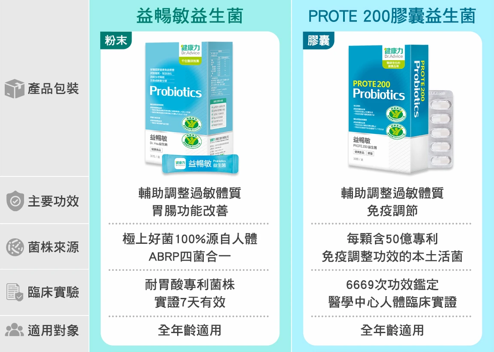

卡卡不順、肚子脹氣、季節性敏感，或是壓力大讓腸胃緊繃，關鍵時刻身體需要的是「好菌應援」。
挑選益生菌不能只看價格高低，重點是是否真正符合你的體質與需求。
選擇有研究文獻支持的專利菌株。
確認產品標示的功效是否符合需求。
建議 20-100 億 CFU 以上。
能耐胃酸與膽鹼，順利抵達腸道。
搭配益生元幫助益生菌生長。
選擇有第三方檢驗與逐批檢驗產品。
注意保存方式，避免高溫潮濕。
避免人工香料、色素與多餘添加。

由內而外活化關鍵防護，打造強韌健康防線。適合經常身處密集環境、注重全方位防禦體質的上班族、高壓熬夜族與學齡期兒童。
點我前往｜PROTE200商品頁